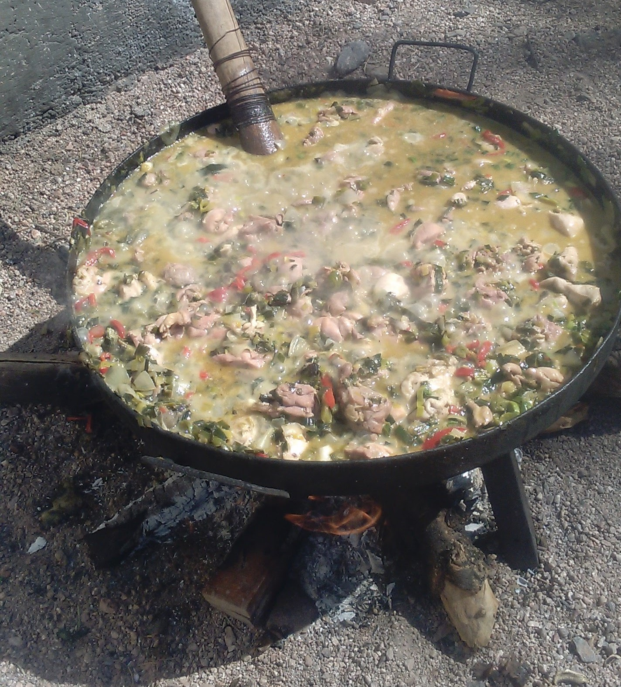

Receteas al Disco
Pollo al disco
| Ingredientes | |
|---|---|
| Cant. | Producto |
| 2kg | Pollo |
| 1/2 taza | Aciete |
| 5 | Zanahorias |
| 2kg | Papa |
| 2 | Cebolla Blanca |
| 2 | Cebolla Verdeo |
| 1 | Puerro |
| 4 | Dientes de Ajo |
| 3 tazas | Caldo |
| 1lt | Vino Blanco |
Condimentos
- Sal.
- Pimienta en granos.
- Aji Molido.
- Oregano.
Preparación: El disco debe estar bien caliente. Agregar un chorro de aceite desde afuera del disco hacia adentro.Dorar las piezas de pollo, aproximadamente 5 minutos de cada lado. Sacarlas y reservarlas a un costado. Tiren el aceite que les quedó de más en el disco.Pelar y cortar chiquito la cebolla y los dientes de ajo. La zanahoria en rodajas al igual que el puerro y la cebolla de verdeo. Poner las verduras en el disco y saltear por 5 minutos.Agregar el vino blanco y la pimienta y lo dejamos reducir.Cuando evaporó el alcohol (te vas a dar cuenta porque no larga olor a alcohol etílico) le agregamos una taza del caldo y remuevan. Sumamos el pollo que teníamos a un costado y cocinamos unos 10 minutos más o hasta que las zanahorias estén medianamente tiernas..Condimentamos el pollo al disco con el ají, el pimentón, el orégano y la sal 5 minutos antes de que termine la cocción.
Bondiola a la cerveza
| Ingedientes | |
|---|---|
| Cant. | Producto |
| 2kg | Bondiola |
| 2 | Cebollas Blanca |
| 2 | Cebollas de Verdeo |
| 1 | Morrón Verde |
| 1 | Morrón Rojo |
| 1 | Morrón Amarillo |
| 2 | Cremas 360cc |
| 1lt | Cerveza Negra |
Condimentos
- Sal.
- Pimienta en granos.
- Aji Molido.
- Pimentón
Preparación: El disco debe estar bien caliente. Agregar un chorro de aceite desde afuera del disco hacia adentro. Sellamos la bondiola de ambos lados y retiramos. Aprovechamos la grasa que largó la bondiola, tiramos un chorrito de aceite, y agregamos los vegetales.Una vez que los vegetales estén blanditos, volvemos a agregar la bondiola. Agregamos las latas de cerveza y el verdeo. Tapamos y dejamos que se consuma un poco. Cada tanto revolvemos para que no se pegue. Dejamos cocinar 1 Hs / 1 Hs 30 minutos más sin dejar de revolver cada tanto.